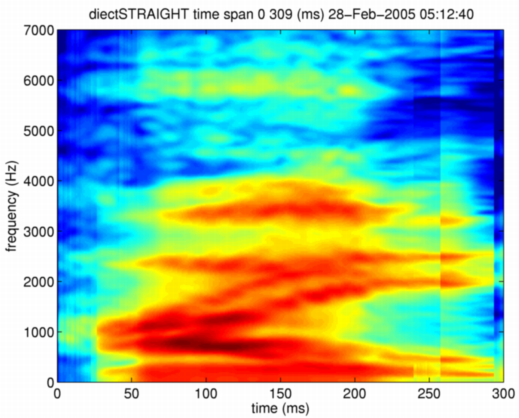
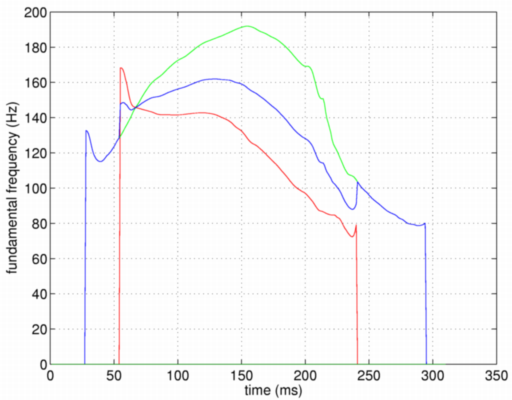
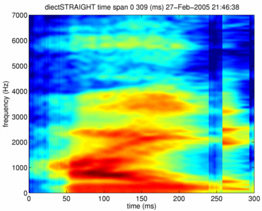

| | | STRAIGHTパラメタのみを用いるモーフィング | Contents | Index |
もう少し、現実的な例として、STRAIGHのパラメタを混合することにします。 ここでは、時間軸の整合を行いません。 それぞれのパラメタを、指定された割合で重ね合わせるだけです。 混合用の関数directSTRAIGHTmorphingを用意してあります。 最初と次の引数が混合すべきMオブジェクトを表し、 三番目の引数が、二番目のMオブジェクトの混合比率 （合計が1になるように混合されます）を表し、 最後の引数が混合の方法を表します。 混合の方法は、今のところlinearとlogを用意してあります。
mObject3 = directSTRAIGHTmorphing(neutralHai,angryHai,0.5,'linear');
時間軸を合わせていないので、STRAIGHTスペクトログラムでは、 フォルマントの軌跡が二重になる等の異常が生じます。 次の図は、STRAIGHTスペクトルの値をそのまま合成したものです。

基本周波数も同様に対数周波数の上で混合します。 時間軸を整合していないため、ある区間では片方が有声音で 他方が無声音になる場合があります。 そのような場合には，有声音の基本周波数を採用するようにしました。 合成された基本周波数の軌跡を示します。 青が合成された軌跡です。 赤と緑は、それぞれの基本周波数軌跡を示します。

このような混合では、出来上がったSTRAIGHTスペクトログラムも 基本周波数軌跡も、自然な音声ではあり得ないものとなっています。 しかし、これらから 再合成された音声 は、それほど不自然には響きません。 あるいは、声道形状と一対一に対応する属性としてのフォルマントは、 知覚的な手掛りとしては意味の無いものなのかも知れません。 むしろ、スペクトル上でのエネルギーの集中領域という即物的な手掛りの方が 知覚に深く関係しているのかも知れません。
SRAIGHTスペクトルの混合法には、そのまま混合するやり方の他に 対数スペクトル上で混合する方法もあります。
>> mObject3 = directSTRAIGHTmorphing(neutralHai,angryHai,0.5,'log'); >> syneu = executeSTRAIGHTsynthesisM(mObject3); >> wavwrite(syneu/32768,fs,16,'mixSTRAIGHTlog.wav');
これはスペクトルのかけ算に相当するため、エネルギーの低い方に形状は支配されます。 そのようにして合成したSTRAIGHTスペクトログラムを以下に示します。

このSTRAIGHTスペクトログラムを用いて 再合成した音声は、 終了部分に余分な音節が付加されたように聴こえます。
| | | STRAIGHTパラメタのみを用いるモーフィング | Contents | Index |